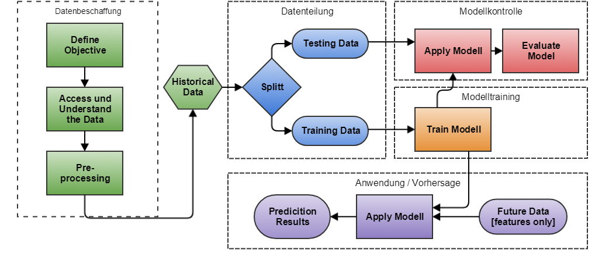
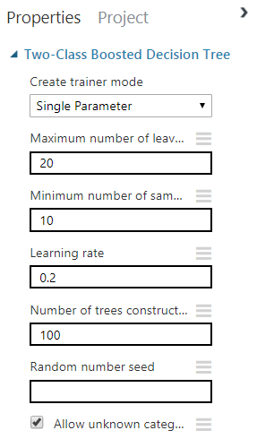

Simulation neuronaler Netze für Softwareentwickler
Frank Pommerening (M010)
WO-Modul: Künstliche Neuronale Netze
Microsoft Machine Learning
Cognitive Services
- Cloudbasierte APIs für Entwickler
- Hauptbereiche
- Vision (Bildanalyse)
- Speech (Spracheingabe)
- Language (Sprache)
- Knowledge (Einblicke und Wissen)
- Search (Suche)
- praktische Anwendung von KI steht im Vordergrund
- kein / kaum Einfluss auf die Parameter des Netzes
Azure Maschine Learning Studio
- Werkzeug zur Analyse großer Datenbestände mit neuronalen Netzen
- Ziel ist die Erstellung von Modell für Vorhersagen

 Für das Training des Modells kommen
KNN zum Einsatz.
Änderungen in den Einstellung führen zu unterschiedlichen Vorhersagen.
Azure Maschine Learning Studio erlaubt durch Parameter verschiedene Simulationen. Ziel ist die Modellerstellung im
Data-Science-Umfeld für praktische Anwendung (Vorhersagen).
Bibliotheken für Entwickler
Recherche / Auswahl
Kriterien
- Unterstützung gängiger Netzarten / Topologien
- Quelltext verfügbar
- Offene Lizenz z.B. MIT
- Keine Spezial-Netze: Bilderkennung / Spiele-KI
- Sprache C# / .NET
- UI (untergeordnet)
Entscheidung
- DotNeuralNet (.NET Core 2 Fork)
- NeuralNetworks (Auszüge)
Umsetzung
- Umsetzung als .NET Core 2 Consolenanwendungen
- Verwendung von Microsoft Visual Studio Code (Plattformunabhängig)
- Je Toplogie ein eigenes Projekt
- Trainingsdaten / Netzkonfigurationen sind Szenarien
- Defintion per Code
- Austausch per json-Dateien
- Erstellung von Ausgabefunktionen zur strukturierten Anzeige
- Keine bzw. minimale Anpassungen am Code der Bibliotheken
Perceptron
(linearen Feed forward-Netze)
Logische Funktionen
-
OR: korrekte Erkennung ab 30 Lernzyklen
-
AND: korrekte Erkennung ab 35 Lernzyklen
-
XOR: keine korrekte Erkennung
Besonderheiten: Perceptron liefert keine Zwischenwerte nur 0 oder 1.
BackPropagation
(nicht linearen, überwachten Feed forward-Netze)
Logische Funktionen
OR - korrekte Erkennung
| Eingaben
| Ausgabe
| Ausgabe (ist)
|
| 1 |
2 |
(soll) |
100 Zyklen |
1000 Zyklen |
5000 Zyklen |
| -1 |
-1 |
0 |
0,358301 |
0,271593 |
0,244592 |
| 1 |
-1 |
1 |
0,559563 |
0,897811 |
0,953947 |
| -1 |
1 |
1 |
0,423526 |
0,902807 |
0,962016 |
| 1 |
1 |
1 |
0,584708 |
0,942219 |
0,980804 |
AND - korrekte Erkennung
| Eingaben
| Ausgabe
| Ausgabe (ist)
|
| 1 |
2 |
(soll) |
100 Zyklen |
1000 Zyklen |
5000 Zyklen |
| -1 |
-1 |
0 |
0,392078 |
0,095111 |
0,034686 |
| 1 |
-1 |
0 |
0,559563 |
0,292244 |
0,258249 |
| -1 |
1 |
0 |
0,423526 |
0,244928 |
0,175064 |
| 1 |
1 |
1 |
0,584708 |
0,799491 |
0,919510 |
XOR - keine korrekte Erkennung
| Eingaben
| Ausgabe
| Ausgabe (ist)
|
| 1 |
2 |
(soll) |
500 Zyklen |
5000 Zyklen |
1000 Zyklen |
| -1 |
-1 |
0 |
0,399293 |
0,098132 |
0,069219 |
| 1 |
-1 |
1 |
0,519994 |
0,098431 |
0,061897 |
| -1 |
1 |
1 |
0,533822 |
0,098428 |
0,061881 |
| 1 |
1 |
0 |
0,576996 |
0,094537 |
0,061360 |
Hopfield-Netz
(rekurrente Netze)
Zahlenerkennung
- Darstellung der Zahlen 0 - 9 als 3 x 5 Raster
- Durchführung von 1000 Durchläufen
- nur ein eindeutiger Treffer gilt als korrekt
|
1 |
2 |
4 |
7 |
9 |
0 |
| Szenario 1 - 2 - 7 |
| Korrekt |
709 |
1000 |
-- |
1000 |
-- |
-- |
| Falsch |
291 |
0 |
-- |
0 |
-- |
-- |
| Szenario 0 - 9 |
| Korrekt |
0 |
0 |
0 |
0 |
844 |
0 |
| Falsch |
1000 |
1000 |
1000 |
1000 |
156 |
1000 |
Buchstabenerkennung
- Darstellung der Buchstaben A - Z als 7 x 7 Raster
- Durchführung von 1000 Durchläufen
- nur ein eindeutiger Treffer gilt als korrekt
|
A |
F |
I |
K |
T |
X |
| Szenario A - K - N - T - X |
| Korrekt |
1000 |
-- |
-- |
154 |
1000 |
0 |
| Falsch |
0 |
-- |
-- |
846 |
0 |
1000 |
| Szenario 10 Buchstaben |
| Korrekt |
0 |
491 |
36 |
0 |
1000 |
106 |
| Falsch |
A |
509 |
964 |
1000 |
0 |
894 |
| Szenario alle Buchstaben |
| Korrekt |
0 |
0 |
0 |
0 |
0 |
386 |
| Falsch |
1000 |
1000 |
1000 |
1000 |
1000 |
614 |